CSS
CSS (англ. Cascading Style Sheets «каскадные таблицы стилей») — формальный язык описания внешнего вида документа (веб-страницы), написанного с использованием языка разметки (чаще всего HTML или XHTML). Также может применяться к любым XML-документам, например, к SVG или XUL.
- Использование CSS
- Способы подключения CSS к документу
- Правила построения CSS
-
Виды селекторов
- Селектор тегов
- Универсальный селектор
- Селектор классов
- Селектор идентификаторов
- Селектор атрибутов
- Cелектор потомков (контекстный селектор)
- Селектор дочерних элементов
- Селектор элементов одного уровня
- Селектор псевдоклассов
- Селектор псевдоэлементов
- Классы и идентификаторы элементов
- Наследование. Каскадирование. Приоритеты стилей CSS
- CSS-вёрстка
Использование CSS
CSS используется создателями веб-страниц для задания цветов, шрифтов, стилей, расположения отдельных блоков и других аспектов представления внешнего вида этих веб-страниц. Основной целью разработки CSS является ограждение и отделение описания логической структуры веб-страницы (которое производится с помощью HTML или других языков разметки) от описания внешнего вида этой веб-страницы (которое теперь производится с помощью формального языка CSS). Такое разделение может увеличить доступность документа, предоставить большую гибкость и возможность управления его представлением, а также уменьшить сложность и повторяемость в структурном содержимом.
Кроме того, CSS позволяет представлять один и тот же документ в различных стилях или методах вывода, таких как экранное представление, печатное представление, чтение голосом (специальным голосовым браузером или программой чтения с экрана) или при выводе устройствами, использующими шрифт Брайля.
Способы подключения CSS к документу
Правила CSS могут располагаться как в самом веб-документе, внешний вид которого они описывают, так и во внешних файлах, имеющих расширение .css. Формат CSS — это текстовый файл, в котором содержится перечень правил CSS и комментариев к ним. Стили CSS могут быть подключены или внедрены в описываемый ими веб-документ четырьмя способами:
-
когда описание стилей находится в отдельном файле, оно может быть подключено к документу посредством элемента <link>, включённого в элемент <head>:
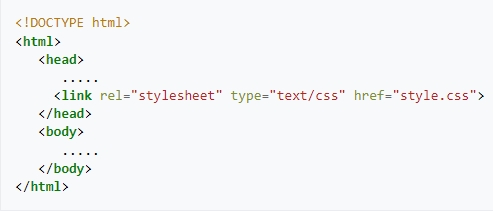 -
когда файл стилей размещается отдельно от родительского документа, он может быть подключён к документу инструкцией @import в элементе <style>:
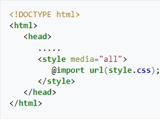 -
когда стили описаны внутри документа, они могут быть включены в элемент <style>, который, включается в элемент <head>:
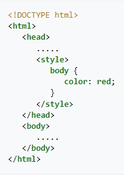 -
когда стили описаны в теле документа, они могут располагаться в атрибутах отдельного элемента
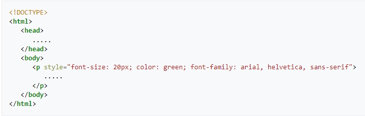
В первых двух случаях к документу применены внешние стили, а во вторых — внутренние стили.
Правила построения CSS
В первых трёх случаях подключения стилей CSS к документу каждое правило CSS из файла имеет две основные части — селектор и блок объявлений. Селектор, расположенный в левой части правила до знака «{», определяет, на какие части документа (возможно, специально обозначенные) распространяется правило. Блок объявлений располагается в правой части правила. Он помещается в фигурные скобки, и, в свою очередь, состоит из одного или более объявлений, разделённых знаком «;». Каждое объявление представляет собой сочетание свойства CSS и значения, разделённых знаком «:». Селекторы могут группироваться в одной строке через запятую. В таком случае свойство применяется к каждому из них.
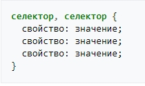В четвёртом случае подключения CSS к документу (см. список) правило CSS, являющееся значением атрибута style элемента, к которому он применяется, представляет собой перечень объявлений («свойство CSS : значение»), разделённых знаком «;».
Виды селекторов
Универсальный селектор
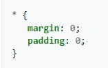Селектор тегов
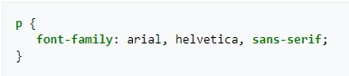Селектор классов
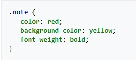Селектор идентификаторов
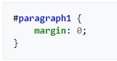Селектор атрибутов
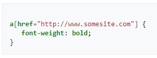Селектор потомков (контекстный селектор)
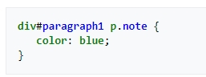Селектор дочерних элементов
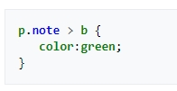Селектор элементов одного уровня
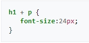Селектор псевдоклассов
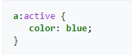Селектор псевдоэлементов
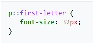Классы и идентификаторы элементов
Класс или идентификатор может быть присвоен какому-нибудь элементу HTML посредством атрибутов class или id этого элемента:
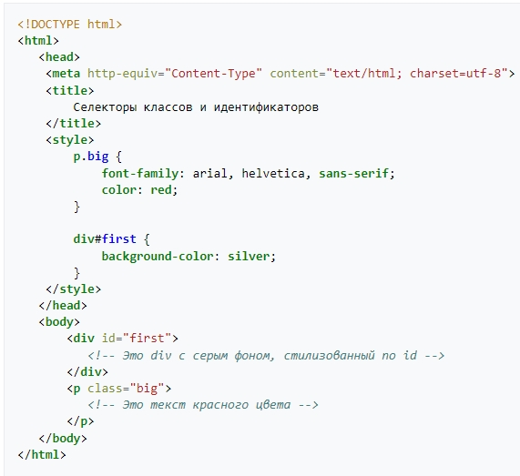
Основное различие между классами элементов и идентификаторами элементов в том, что идентификатор
предназначен для одного элемента, тогда как класс обычно присваивают сразу нескольким. Тем не менее,
современные браузеры, как правило, корректно отображают множественные элементы с одинаковым
идентификатором. Также различие в том, что могут существовать множественные классы (когда класс
элемента состоит из нескольких слов, разделённых пробелами). Для идентификаторов такое невозможно.
Важно отметить следующее отличие идентификатора от класса: идентификаторы широко используются в
JavaScript для нахождения уникального элемента в документе.
Имена классов и идентификаторов, в отличие от названий тегов и их атрибутов, чувствительны к
регистру ввода букв.
Свойства классов и идентификаторов задаются с помощью соответствующих селекторов. Причём может быть задано как свойство класса в целом (в таком случае селектор начинается с „.“, например, „.big“) или свойство идентификатора самого по себе (в таком случае селектор начинается с „#“, например, „#first“), так и свойство какого-нибудь элемента этого класса или с этим идентификатором.
В CSS, помимо классов, задаваемых автором страницы, существует также ограниченный набор так называемых псевдоклассов, описывающих вид гиперссылок с определённым состоянием в документе, вид элемента, на котором находится фокус ввода, а также вид элементов, являющихся первыми дочерними элементами других элементов. Также в CSS существует четыре так называемых псевдоэлемента: первая буква, первая строка, применение специальных стилей до и после элемента.
Наследование. Каскадирование. Приоритеты стилей CSS.
Применение CSS к документам HTML основано на принципах наследования и каскадирования. Принцип наследования заключается в том, что свойства CSS, объявленные для элементов-предков, почти всегда наследуются элементами-потомками. Принцип каскадирования применяется в случае, когда какому-то элементу HTML одновременно поставлено в соответствие более одного правила CSS, то есть, когда происходит конфликт значений этих правил. Чтобы разрешить такие конфликты, вводятся правила приоритета:
- Наиболее низким приоритетом обладает стиль браузера;
- Следующим по значимости является стиль, заданный пользователем браузера в его настройках;
-
И наиболее высоким приоритетом обладает стиль, заданный непосредственно автором страницы. И
далее, уже в этом авторском стиле приоритеты расставляются следующим образом:
- Самым низким приоритетом обладают стили, наследуемые в документе элементом от своих предков;
- Более высоким приоритетом обладают стили, заданные во внешних таблицах стилей, подключённых к документу;
- Ещё более высоким приоритетом обладают стили, заданные непосредственно селекторами всех десяти видов (см. подраздел "виды селекторов"), содержащимися в контейнерах style данного документа. Нередки случаи, когда к какому-нибудь элементу имеют отношение, задают его вид, несколько таких селекторов. Такие конфликты между ними разрешаются с помощью расчёта специфичности каждого такого селектора и применения этих селекторов к данному элементу в порядке убывания их специфичностей.
-
Специфичность селекторов делится на 4 группы — a, b, c, d:
- если стиль встроенный (определён как style="...", то а=1, иначе a=0) ;
- значение b равно количеству идентификаторов (иначе — id=" ", они начинаются с #) в селекторе;
- значение c равно количеству классов (class=" ", они начинаются с .), псевдоклассов (они начинаются с :, например a:hover) и селекторов атрибутов (input[type="text");
- значение d равно количеству селекторов типов элементов (h1 { color: blue; }) и псевдокод-элементов (p::first-line { color: blue; }). После этого полученное значение приводится к числу (обычно в десятичной системе счисления). Селектор, обладающий большим значением специфичности, обладает и большим приоритетом.
- Таблица расчёта специфичности
Но, самым высоким приоритетом обладают стили, объявленные автором страницы или пользователем, с помощью сопроводительного правила !important. Если таких свойств несколько, то предпочтение отдаётся в первую очередь стилям, заданным автором или пользователем, а для остальных свойств, которые будут являться задаваемыми автором страницы, потребуется определить их специфичности по принципам, описанным выше, и применять эти свойства в порядке убывания этих специфичностей.
CSS-вёрстка
До появления CSS оформление веб-страниц осуществлялось исключительно средствами HTML, непосредственно внутри содержимого документа. Однако с появлением CSS стало возможным принципиальное разделение содержания и представления документа. За счёт этого нововведения стало возможным лёгкое применение единого стиля оформления для массы схожих документов, а также быстрое изменение этого оформления.
Преимущества:
- Несколько дизайнов страницы для разных устройств просмотра. Например, на экране дизайн будет рассчитан на большую ширину, во время печати меню не будет выводиться, а на КПК и сотовом телефоне меню будет следовать за содержимым.
- Уменьшение времени загрузки страниц сайта за счёт переноса правил представления данных в отдельный CSS-файл. В этом случае браузер загружает только структуру документа и данные, хранимые на странице, а представление этих данных загружается браузером только один раз и может быть закэшировано.
- Простота последующего изменения дизайна. Не нужно править каждую страницу, а достаточно лишь изменить CSS-файл.
- Дополнительные возможности оформления. Например, с помощью CSS-вёрстки можно сделать блок текста, который остальной текст будет обтекать (например для меню) или сделать так, чтобы меню было всегда видно при прокрутке страницы.
Недостатки
- Различное отображение вёрстки в различных браузерах (особенно устаревших), которые по-разному интерпретируют одни и те же данные CSS.
- Часто встречающаяся необходимость на практике исправлять не только один CSS-файл, но и теги HTML, которые сложным и ненаглядным способом связаны с селекторами CSS, что иногда сводит на нет простоту применения единых файлов стилей и значительно увеличивает время редактирования и тестирования.